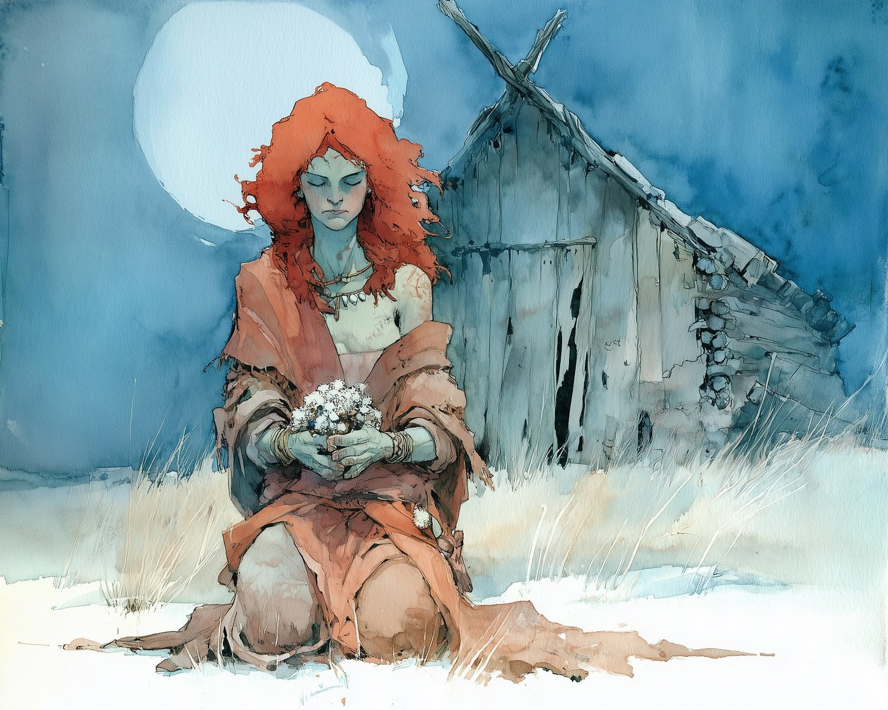
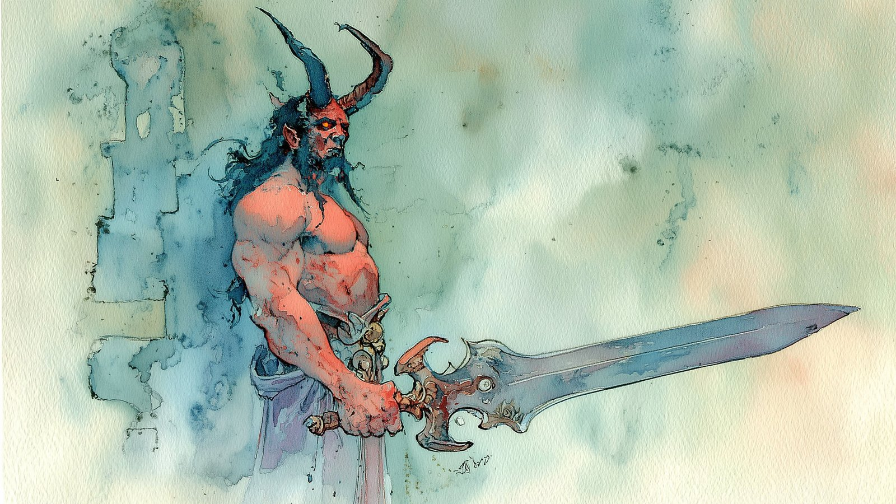
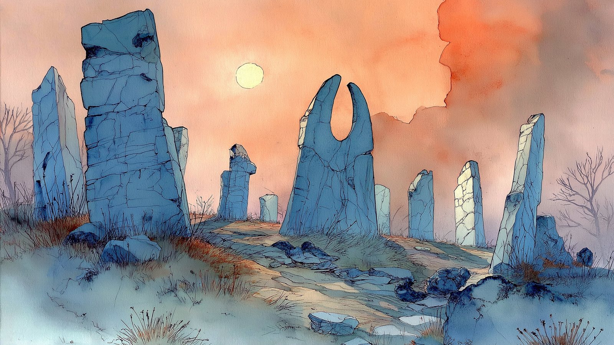
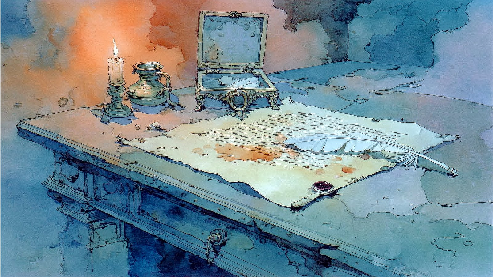
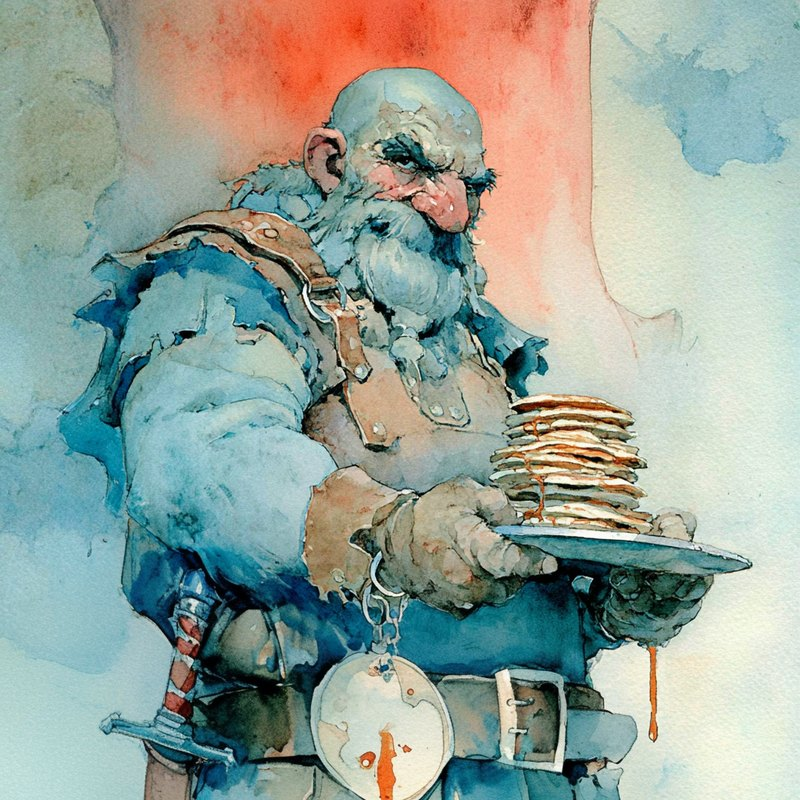
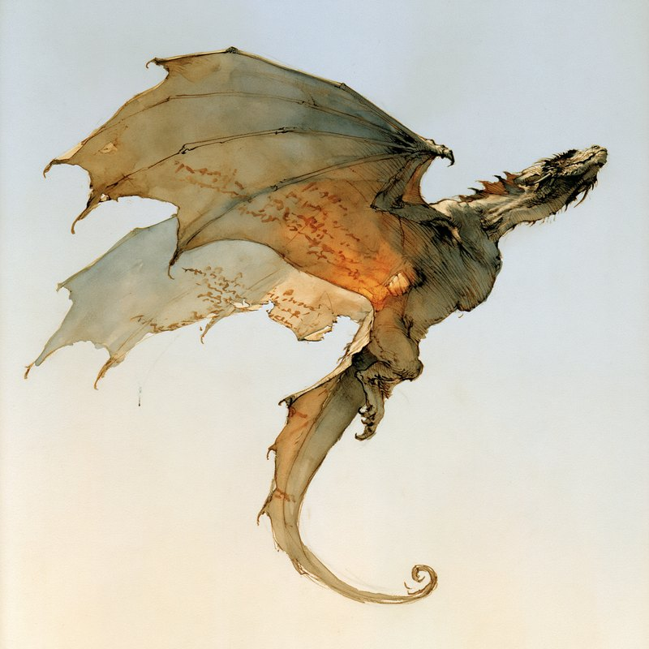
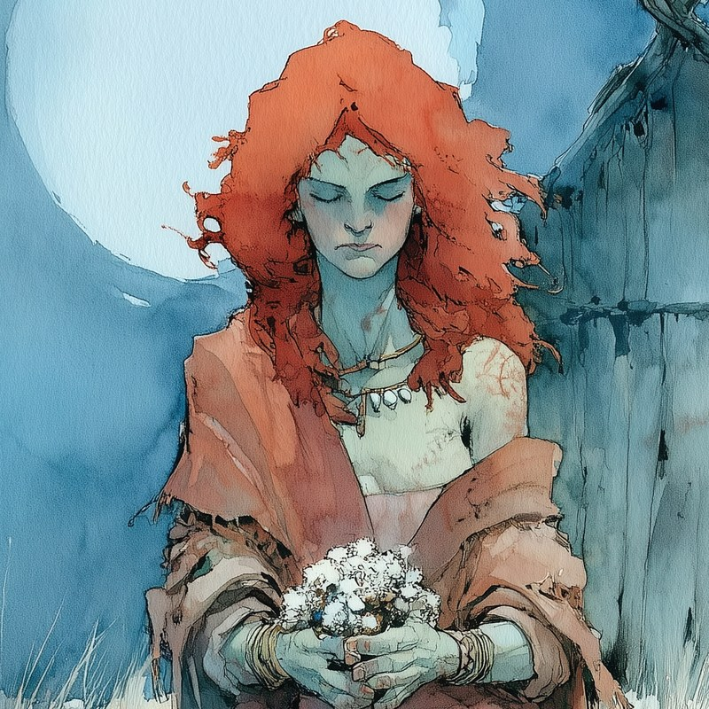

Last time, on the road to the barrow
Session 78 — The Fog of Ebonroot

🔍 Camellia SpringshowerThe fog gives the dead back.
Ahead of a marching devil army, the party crossed the Dividing Plains to fog-choked Ebonroot and rode out to save a farm family lost in the mist. They arrived too late — ghouls and a skeleton horde met them at the Thistle Farmstead instead. In the farmhouse they found Camellia Springshower, a corpse-like Circle of the Blighted druid who guards the region: the fog now pours from the Shadebarrow itself, and it raises whatever it touches. She's coming with them to the barrow.
The world of Tal'Dorei
Map of Tal'Dorei
From Emon in the west to Ebonroot in the east. Open the full map to measure travel distances by clicking.
 📏 Open the map — click to measure distances
📏 Open the map — click to measure distances
The Archives
Four ways in
Live character stats, the compendium, every session recap, and where things stand right now.
Party Reference
Combat stats, ability scores, saves, and full skill lists for all six characters.
Enter → 123 entriesCompendium
Characters, 65 NPCs, 29 locations, factions, quests, the pantheon, and the timeline.
Enter → 25 recapsSession Recaps
Every write-up from the first meeting through Session 78 — loot, decisions, and quotes.
Enter → Updated S78Campaign Status
The dashboard: active leads, urgent threats, open quests, and where things stand now.
Enter →Know your enemy
Active Threats

Demon PrinceGraz'zt, Demon Prince of Indulgence
Crossed the divine gate. The ancestors are waking at Ebonroot, and the Abyssal Anchors crisis deepens.

Sealed VaultThe Shadebarrow
An Orcus-sealed vault of "pure malice" in Ebonroot. Blaine Kraverrogg and the Cult of Vecna mean to weaponize it against the Republic.

ConspiracyThe Forged Signature
Someone inside the Clasp is forging Fetch's signature on Myriad letterhead. A rival wants his spot — or wants the party distracted.
The heroes
The Party


{kind=link}
Who travels with them
Companions

Dwarf · Emberhold Thrack Turned up at the party's door in Session 54 and never quite left. Knows the Yug'Voril slaver operations from the inside. Debt paid as of Session 66 — he rides with them now.
Velum Dragon · Knowledge Keeper Zelthrax the Folded Promise A tiny dragon folded out of vellum and parchment, made by the elven wizard Arandor. Sealed inside a book on the fragility of knowledge until the party broke the seal.
Firbolg Druid · Circle of the Blighted Camellia Springshower Self-appointed guardian of the Shadebarrow region. A specter touched her inside the barrow years ago and the change has never stopped — she is not undead, whatever her eyes suggest. Met at the Thistle Farmstead in Session 78 and walked back toward the barrow with the party.